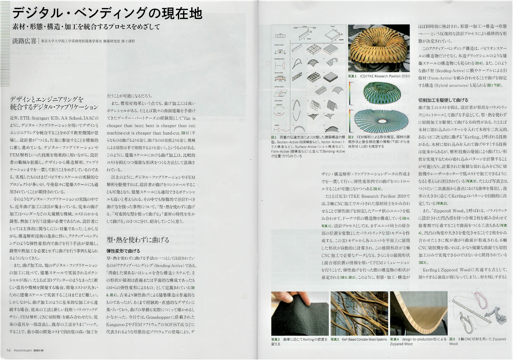
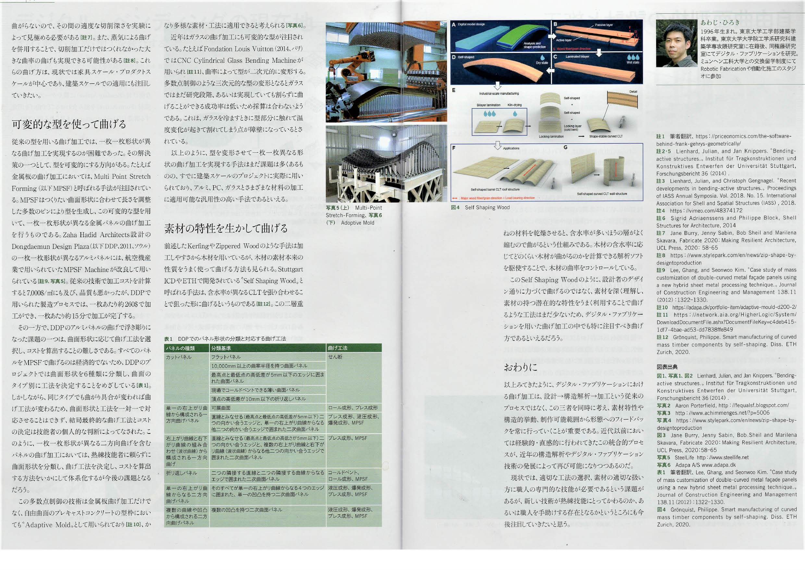
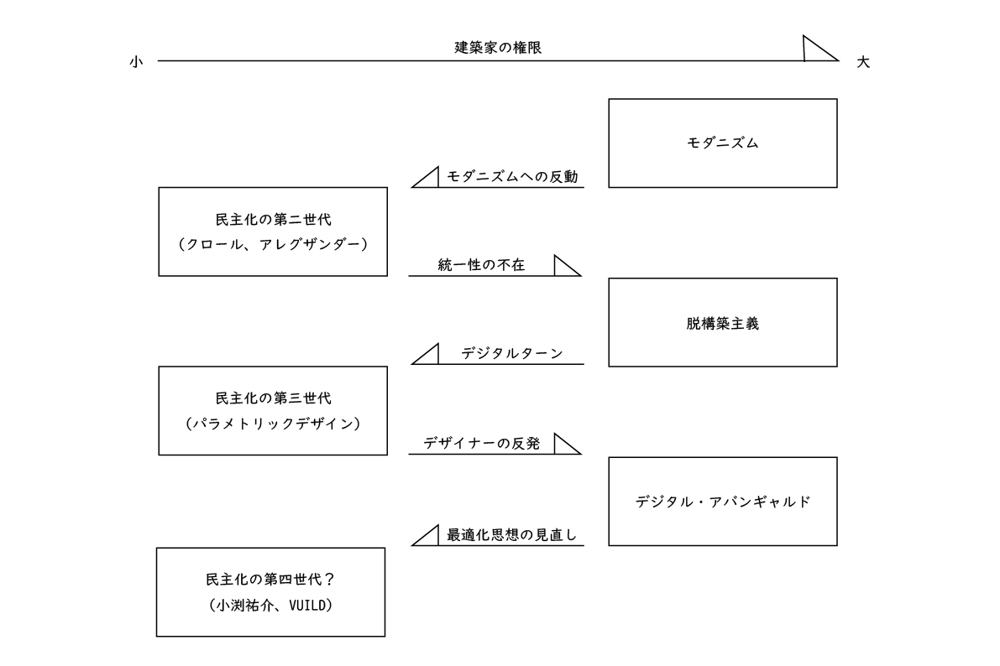
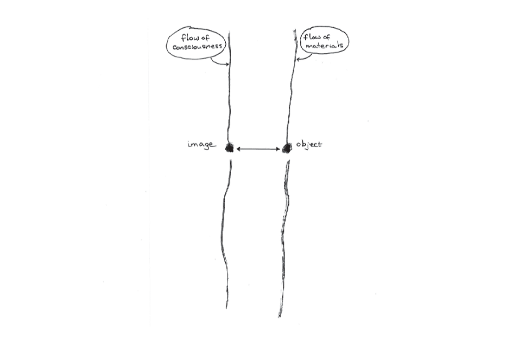
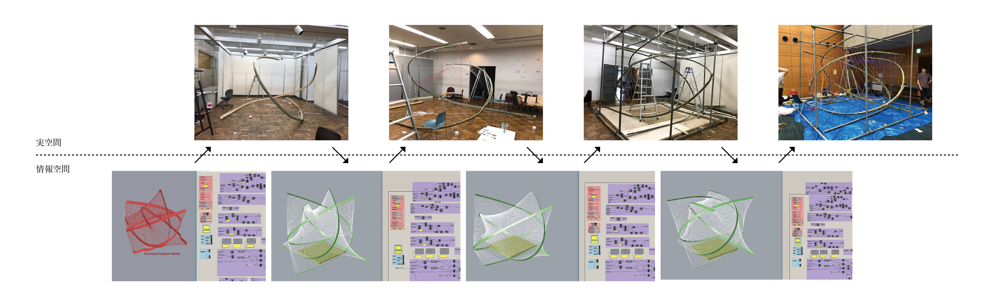

会誌『建築士』2021年10月号
デジタル・ベンディングの現在地
素材・形態・構造・加工を統合するプロセスをめざして


会誌『建築士』2021年10月号の「曲げる」特集にて、デジタル・ファブリケーションを用いた曲げの試みを紹介する記事を寄稿しました。（以下画像を除いた全文）
1. デザインとエンジニアリングを統合するデジタル・ファブリケーション
近年、ETH, Stuttgart ICD, AA School, IAAC のように、デジタル・ファブリケーションを用いてデザインとエンジニアリングを統合することを目指す教育機関が登場し、設計者が“つくる”行為に参加することを積極的に推し進めている。デジタル・ファブリケーションやFEM解析といった技術を効果的に用いながら、設計者の職域を拡張し、デザインから構造解析、ファブリケーションまでを一貫して担うことを目指しているのである。実現したものはまだパビリオンスケールの実験的なプロジェクトが多いが、今後徐々に建築スケールにも適用されていくことが期待されている。
そのようなデジタル・ファブリケーションの実践の中でも、近年曲げ加工に注目が集まっている。従来の曲げ加工はベンダーなどの大規模な機械、コストのかかる鋳型、熱加工を行う設備が必要であるため、設計者にとっては主体的に関与しにくい対象であった。しかしながら、構造解析技術の進歩に伴い、アクティブ・ベンディングのような弾性変形内で曲げを行う手法が登場し、鋳型や熱加工を必要とせずに曲げを行う事例も見られるようになってきた。
また、曲げ加工は他のデジタル・ファブリケーションの加工に比べて建築スケールで実装されるポテンシャルが高い。例えば3Dプリンターのようなまったく新しい道具や機械を開発する場合、開発コストが大きいために建築スケールで実装することはまだまだ難しい。しかしながら、曲げ加工のように在来的な加工から連続する場合、従来の工法と新しい技術（パラメトリックデザイン、FEM解析、CNC切削機）を組み合わせたり、従来の道具を一部改良し、既存の工法をうまく“ハック”することで、最小限の開発コストで自由度の高い加工を行うことが可能になるだろう。
また、費用対効果という点でも曲げ加工には高いポテンシャルがある。例えば数々の曲面建築を手掛けてきたゲーリー・パートナーズの経験則として“flat is cheaper than bent; bent is cheaper than cut; machine-cut is cheaper than hand-cut[i]. （平らなものは曲げるよりも安く、曲げるのは切削よりも安く、機械による切削は手で切削するよりも安い。）”というものがある。このように建築スケールにおける曲げ加工は、比較的コストを抑えつつ複雑な形状を作る方法として認識されている。
以上のように、デジタル・ファブリケーションやFEM解析を駆使すれば、設計者が曲げをコントロールすることも可能となり、建築スケールにも適用できるポテンシャルも高いと考えられる。その中でも特徴的で注目すべき曲げ方を扱った事例について、「 型・熱を使わずに曲げる」、「可変的な鋳型を使って曲げる」、「素材の特性を生かして曲げる」の三つに分け、紹介していこうと思う。
2. 型・熱を使わずに曲げる
型・熱を使わずに曲げる手法の一つとして注目されているのがアクティブ・ベンディング（Bending-Active）である。「湾曲した梁あるいはシェルを含む構造システムで、その形状が最初は直線または平面的な構成であったものからの弾性変形によるもの」として定義されている[ii]。古来より弾性曲げによる建築構造は普遍的なものであったが、あくまで経験的・直感的なデザインに基づいており、曲げの挙動も実際につくって確かめるしかなかった。今日では、Grasshopperに搭載されたKangaroo 2やFEMソフトウェアのSOFiSTiKなどに代表されるような形態決定ソフトウェアの登場により、デザイン・構造解析・ファブリケーションデータの作成までを一貫して行い、弾性変形内での曲げをコントロールすることが可能になりつつある[iii]。
例えばICD/ITKE Research Pavilion 2010では、3軸CNC加工でカットされた部材同士をかみ合わせることで弾性曲げを固定したアーチ状のユニットを組み合わせて、ドーナツ状の構造物を構成している[iv]。設計プロセスとしては、まずユニット同士の接合部の位置を変数としたパラメトリックな3Dモデルを作成する。この3Dモデルから各ユニットを平面上に展開した形状が自動的に計算され、この展開形状が3軸CNC加工で必要なデータとなる。さらにその展開形状と接合部位置の情報を用いてFEMシミュレーションを行うことで、弾性曲げを行った際の構造物の形状が推定される[v]。このように、形態・加工・構造がほぼ同時的に検討され、形態→加工→構造→形態→…という反復的な設計プロセスにより最終的な形態が決定されていく。
このアクティブ・ベンディング構造は、パビリオンスケールの構造物だけでなく、木造グリッドシェルのような建築スケールの構造物にも見られる[vi]。また、このような曲げ材(Bending-Active)に膜やケーブルによる引張材（Form-Active）を組み合わせることで曲げを固定する構造(Hybrid structures)も見られる。
曲げ加工のコストを抑え、設計者が形状をパラメトリックにコントロールして曲げる手法として、型・熱を使わずに切削加工を駆使して曲げる方向性がある。例えば木材に切れ込みのパターンを入れて木材を二次元的、あるいは三次元的に曲げる”Kerfing”と呼ばれる技術がある。木材に切れ込みを入れて曲げやすくするという技術は従来からあるが、解析技術の発展により曲げたい形状を実現するための切れ込みパターンを計算することが可能となり、計算された複雑な切れ込みをCNC切削機やレーザーカッターで低コストで加工できるようになると考えられ注目されている。例えば図4は、つくりたい二次曲面から各点における曲率を算出し、曲率の大きさに応じてKerfingのパターンを自動的に決定している例である。曲率が大きい部分はパターンの密度が大きくなり、曲率が小さい部分は密度が小さくなる。
[vii] 、テンションロッドと組み合わせて固定する方法などが試行されている[viii]。
また、”Zippered Wood”と呼ばれる、パラメトリックに設計された凹凸部を持つ合板二枚を組み合わせて接着剤で圧着することで曲面を作る工法もある。凹凸の角度や大きさを変化させることで2枚をかみ合わせたときに板が曲がり曲面が形成される。６軸CNC切削機を用いればかなり複雑な曲面でも切削加工のみで実現できるのではないかと期待されている。
KerfingとZippered Woodに共通する点として、削りすぎると強度が弱くなってしまうし、材を残しすぎると曲がらないので、その間の適度な切削深さを実験によって見極める必要がある[ix]。また、蒸気による曲げを併用することで、切削加工だけではつくれなかった大きな曲率の曲げも実現できる可能性がある[x]。これらの曲げ方は現状では家具スケール・プロダクトスケールが中心であり、建築スケールでの適用にも注目していきたい。
3. 可変的な型を使って曲げる
従来の型を用いる曲げ加工では 一枚一枚形状が異なる曲げ加工を実現するのが困難であった。その解決策の一つとして、型を可変的にする方向がある。例えば金属板の曲げ加工においては、Multi Point Stretch Forming (以下MPSF)と呼ばれる手法が注目されている。MPSFはつくりたい曲面形状に合わせて長さを調整した多数のピンにより型を生成し、この可変的な型を用いて一枚一枚形状が異なる金属パネルの曲げ加工を行うものである。Zaha Hadid Architects設計のDongdaemun Design Plaza（以下DDP、2011、ソウル）の一枚一枚形状が異なるアルミパネルには、航空機産業で用いられていたMPSF Machineが改良して用いられている[xi]。従来の技術で加工コストを計算すると7000＄/㎡にも及び品質も悪かったが、DDPで用いられた製造プロセスでは、一枚当たり約260＄で加工ができ、一枚あたり約15分で加工が完了する。
その一方で、DDPのアルミパネルの曲げで浮き彫りになった課題の一つは、曲面形状に応じて曲げ工法を選択し、コストを算出することの難しさである。すべてのパネルをMPSFで曲げるのは経済的ではなく、例えば一方向曲げであれば従来の曲げ工法で十分であるため、曲面形状によってその都度曲げ工法を選択する必要がある。DDPのプロジェクトでは曲面形状を6種類に分類し、曲面のタイプ別に工法を決定することを目指している。しかしながら、同じタイプでも曲がり具合が変われば曲げ工法が変わるため、曲面形状と工法を一対一で対応させることはできず、結局最終的な曲げ工法とコストの決定は技能者の個人的な判断によってなされた。このように、一枚一枚形状が異なる二方向曲げを含むパネルの曲げ加工においては、熟練技能者に頼らずに曲面形状を分類し、曲げ工法を決定し、コストを算出する方法をいかにして体系化するが今後の課題となるだろう。
この多数点制御の技術は金属板曲げ加工だけでなく、自由曲面のプレキャストコンクリートの型枠においても”Adoptive Mold”として用いられており[xii]、かなり多様な素材・工法に適用できると考えられる。
近年はガラスの曲げ加工にも可変的な型が注目されている。例えばFondation Louis Vuitton (2014、パリ)ではCNC Cylindrical Glass Bending Machineが用いられ[xiii]、曲率によって型が二次元的に変形する。多数点制御のような三次元的な型の変形となるとガラスではまだ研究段階、あるいは実現していても割らずに曲げることができる成功率は低いため採算は合わないようである。これはガラスを冷ますときに型部分に触れて温度変化が起きて割れてしまう点が障壁になっているとされている。
以上のように、型を変形させて一枚一枚異なる形状の曲げ加工を実現する手法はまだ課題は多くあるものの、すでに建築スケールのプロジェクトに実際に用いられており、アルミ、PC、ガラスと様々な材料の加工に適用可能な汎用性の高い手法であるといえる。
4. 素材の特性を生かして曲げる
前述したKerfingやZippered Woodのような手法は加工しやすさから木材を用いているが、木材の素材本来の性質をうまく使って曲げる方法も見られる。Stuttgart ICDやETHで開発されている”Self Shaping Wood”と呼ばれる手法は、含水率が異なるCLTを張り合わせることで狙った形に曲げるというものである[xiv]。この二層重ねの材料を乾燥させると、含水率が多い方の層がよく縮むので曲がるという仕組みである。木材の含水率に応じてどのくらい木材が曲がるのかを計算できる解析ソフトを駆使することで、木材の曲率をコントロールしている。
このSelf Shaping Woodのように、設計者のデザイン通りに力づくで曲げるのではなく、素材を深く理解し、素材の持つ潜在的な特性をうまく利用することで曲げるような工法はまだ少ないため、デジタル・ファブリケーションを用いた曲げ加工の中でも特に注目すべき曲げ方であるといえるだろう。
5. おわりに
以上みてきたように、デジタル・ファブリケーションにおける曲げ加工は、設計→構造解析→加工という従来のプロセスではなく、この三者を同時に考え、素材特性や構造的挙動、制作可能範囲から形態へのフィードバックを常に行っていくことが重要である。近代以前においては経験的・直感的に行われてきたこの統合的プロセスが、近年の構造解析やデジタル・ファブリケーション技術の発展によって再び可能になりつつあるのだ。特にアクティブ・ベンディングやSelf Shaping Woodのような、設計者が構想した形態をそのまま作ろうとするのではなく、素材本来の特性や構造的挙動と向き合いながらデザインとエンジニアリングを同時に行うことで「自然な形」を作っていくような工法への期待は大きい。
現状では、適切な工法の選択、素材の適切な扱い方に職人の専門的な技能が必要であるという課題があるが、新しい技術が熟練技能にとってかわるのか、あるいは職人を手助けする存在となるかというところにも今後注目していきたいと思う。
[i]筆者翻訳、https://priceonomics.com/the-software-behind-frank-gehrys-geometrically/ [ii], [v]Lienhard, Julian, and Jan Knippers. "Bending-active structures." Institut für Tragkonstruktionen und Konstruktives Entwerfen der Universität Stuttgart, Forschungsbericht 36 (2014). [iii]Lienhard, Julian, and Christoph Gengnagel. "Recent developments in bending-active structures." Proceedings of IASS Annual Symposia. Vol. 2018. No. 15. International Association for Shell and Spatial Structures (IASS), 2018. [iv]https://vimeo.com/48374172 [vi]Sigrid Adriaenssens and Philippe Block, Shell Structures for Architecture, 2014 [vii]http://www.iaacblog.com/programs/exploration-possibility-double-curved-wooden-panels-fabrication/ [viii]http://www.achimmenges.net/?p=5006 [ix]Jane Burry, Jenny Sabin, Bob Sheil and Marilena Skavara, Fabricate 2020: Making Resilient Architecture, UCL Press, 2020: 58-65 [x]https://www.stylepark.com/en/news/zip-shape-by-designtoproduction [xi]Lee, Ghang, and Seonwoo Kim. "Case study of mass customization of double-curved metal façade panels using a new hybrid sheet metal processing technique." Journal of Construction Engineering and Management 138.11 (2012): 1322-1330. [xii]https://adapa.dk/portfolio-item/adaptive-mould-d200-2/ [xiii]https://network.aia.org/HigherLogic/System/DownloadDocumentFile.ashx?DocumentFileKey=c4deb415-1df7-4bae-ad53-dd7838ffe849 [xiv]Grönquist, Philippe. Smart manufacturing of curved mass timber components by self-shaping. Diss. ETH Zurich, 2020.
23 JUL 2020 繰り返す建築の「民主化」とその反動
近年の建築業界においてみられる流行の一つとして、建築設計・施工における使い手の参加が挙げられる。DIYによるリノベーション手法であったり、デジタル工作機械の普及に伴うパーソナル・ファブリケーションやソーシャル・ファブリケーションといった運動がその代表例である。あるいはT_ADSのSTIK Pavilion(2014)のように、素人が施工に参加することによって生じる不正確さを建築形態に落とし込もうという動きまである。
このような設計・施工に対する参加の運動は現代においてはじめてみられる現象ではない。『ひらかれる建築 ―「民主化」の作法』（松村秀一、筑摩書房、2016）では、建築を使い手に開こうとする運動を建築の「民主化」と定義し、20世紀における建築の民主化を「第一世代」、「第二世代」、「第三世代」に分類している。「第一世代」は量産型住宅によりすべての人々に快適な住環境を提供しようというモダニズム期における運動、「第二世代」はハブラーケン、クロール、アレグザンダーをはじめとする工業化からの脱却を目指した運動、「第三世代」はセルフ・リノベーションやワークショップにより、「箱」としての建築よりも「場」を作っていこうという運動である。ここで言う「第二世代」と「第三世代」が設計・施工における使い手の参加に当てはまり、現代における参加の運動は「第三世代」の延長としてみなすことができるだろう。
このように、松村先生の本では20世紀における建築の民主化の系譜が語られているが、私はそのような建築の民主化に対する、建築家や批評家による反動的な運動にも着目した。例えば、第二世代において、パタン・ランゲージによる参加の手法は、散漫で加算的な建物を生み出す傾向があるという批判を受けることになる[i]。アレグザンダー自身も、「得られた幾何学は不十分であり深みに欠け、簡潔さも十分ではなかった[ii]」と述べており、より美学的な理論である「全体性とセンターの理論」へとシフトしていくことになる。また、L. クロールのルーヴァン・カトリック大学医学部学生寮（1969-1972）は、1968年のフランス五月革命に触発され[iii]、設計・施工における使い手の参加を取り入れた建築であるが、かなり部分的な運動に終わった。その一方で、同じく五月革命に影響を受けた[iv]B. チュミは、脱構築として括られる、より建築家の権限を増大させる方向へと向かっていき、より大きな広がりを持つ建築運動となった。このように、第二世代の民主化は概して、批評家や建築家による反動的な動きをもたらし、局所的な流行に終わる場合が多かったといえる。
このような60-70年代の「民主化」の次に来る参加の潮流としてあげられるのが、1990年代におけるマス・カスタマイゼーションの興隆である。建築史家のマリオ・カルポは、2011年初版の著書『アルファベット そして アルゴリズム』において、90年代に起きたデジタルターンが建築家の原作者性を解消し、一般の人々がデザインに自由に参加することができるようなマス・カスタマイゼーション、マス・コラボレーションを引き起こすだろうと述べている。しかしながら、マリオ・カルポはその5年後である2016年の著書『The Second Digital Turn』において、「この本を書いている段階（2016年）では、このようなマス・カスタマイゼーションからマス・コラボレーションへの移行は建築とデザインの分野では起こらなかったと結論付けても差支えがないように思われる[v]。」と明確に述べており、その主な原因を、「プロのデザイナーのほとんどがこの考えを拒絶した[vi]」からであるとしている。つまり、ここではプロのデザイナーは自身の原作者性を薄めるような方向性に対しては批判的な態度をとるということを指摘しており、これはあらゆる「民主化」に対する反動の要因の一つであると考えられる。そして著者自身は代わりに、デジタルテクノロジーを用いることで初めて可能となる高解像度なオブジェクトの出現を「セカンド・デジタル・ターン」の特徴の一つであるとしている[vii]が、より美学的な理論へと向かっていくという点で、アレグザンダーのたどった反動的な方向性と類似しているということが言える。

民主化とその反動のダイアグラム
以上のように、20世紀における設計・施工における使い手の参加の潮流は、そのほとんどが建築家の原作者性を増すような反動的な潮流を招き、部分的な流行に終わってしまっているといえる。歴史は繰り返すということを考えれば、近年における参加の潮流もその二の舞となりかねない。しかしながら、近年の潮流が60-70年代の運動や90年代の運動と異なるところは、慢性的な職人不足や、空き家のストック活用のような差し迫った社会的要請とリンクし、デジタルファブリケーションのような技術的進歩と結びつく可能性があるという点である。第一世代の民主化のように、建築の民主化が社会的背景・産業構造と密接に結びつけば、部分的な流行ではなく、より本質的な手法として定着していく可能性が出てくるのではないか、と期待を抱いている。
[i]イングリッド・キング「クリストファー・アレグザンダーと現代建築」難波和彦監訳、『a+u』、1993/8、p.15 [ii]長坂一郎『クリストファー・アレグザンダーの思考の軌跡』、彰国社、2015、p.135 [iii]ルシアン・クロール『参加と複合』重村力訳、住まいの図書館出版局、1990、p.98 [iv]ベルナール・チュミ『建築と断絶』山形浩生、鹿島出版会、1996、pp.10-13 [v]Mario Carpo, The Second Digital Turn, MIT Press, 2016, p132（拙訳）以下原文：At the time of writing (2016), it already seems safe to conclude that this transition from mass customization to mass collaboration didn’t happen in architecture and design. [vi]ibid., p.132（拙訳）以下原文：the design professions mostly rejected this opinion [vii]ibid., pp.79-97
24 MAR 2020 "道具をつくる"ということ ―マス・プロダクションとマス・カスタマイゼーションの狭間で―
私は社会構造の変化、特に生産のあり方が変わることによって建築がどう変わるかに興味がある。モダニズムの運動は建築のあり方を根本的に変えたといえるが、これは人口増加に伴う住宅の供給不足、産業の工業化という変化によってもたらされた運動であるといえる。その一方で、ポスト・モダニズムはその拠り所が「モダニズムに対する反動」でしかなく、社会構造自体の変化は関連していなかったために、一時の流行として見られてしまった。モダニズム以前の建築の歴史を見ても同様のことが言える。建築史家のマリオ・カルポが指摘しているように、ゴシック建築のように新しい建設技術を伴う様式は独自の建築のあり方を獲得したといえる一方で、ルネサンスや新古典主義のような建設技術の停滞ともいえる時代には、過去の様式の模倣・引用に終始している[i]。私がつくりたいのは一時の流行に終わるような建築ではなく、社会構造と密接に結びつき、普遍的な価値を持つような建築である。
モダニズム以降の建築界において産業構造が変わりうる可能性があるとして期待されたのは、マス・カスタマイゼーションと呼ばれる多品種少量生産のシステムの発明である。工業化の時代においては、利益を生み出すためには同じものを大量に作ることが必然であった。しかし、鋳型や打ち出し機に基づく機械に代わって、NC加工機や3Dプリンターなどのデジタルデータをそのまま出力できる機械が発達すれば、同じものを作っても一つ一つ異なる部材を作っても理論的にはかかるコストは同じになる。その結果、個別のニーズに合わせて異なる部材を作ったり、これまでは建設不可能だった複雑な形態を付加的なコストなく生み出せる可能性がある、というものである[ii]。実際、マリオ・カルポは著書『The Second Digital Turn』の中で、数値を変えることで異なる形が生成され、それをそのまま出力できるような照明器具であったり[iii]、中世において果てしない年月をかけて作られていた複雑な装飾を3Dプリンターによって容易に実現するような作品を紹介している[iv]。

NOX/Lars Spuybroek, my Light (2007)

Michael hansmeyer and Benjamin Dillenburger, Digital Grotesque (2013)
このように、マス・カスタマイゼーションには明るい未来が待っているように思えるが、そこまでことは単純ではない。建築部材のマス・カスタマイゼーションには、スケール、コストの問題など多くの障壁があるが、私が一番懸念しているのは機械によってマテリアルが規定されてしまうという問題である。例えば3Dプリンターに関しては、最近金属が加工できるものや複数のマテリアルを扱えるものが普及し始めてはいるものの、現状では使えるマテリアルはかなり限られている。工業生産は均質化できない材料である木材を排除したが、機械によって使えるマテリアルが規定されてしまうという点ではNC加工機や3Dプリンターも同じではないかと思う。建築史家の村松貞次郎は職人が用いる道具と工業機械との違いを次のように述べている。
（職人の）道具は本質的にモノに向けて、その機能、形態を鍛えられてきた。物や材料を均質化して、機械生産にかなわせてしまう強引な硬さと、それはまったく正反対である[v]。
マリオ・カルポは、マス・カスタマイゼーションは個別性や即興性を持つという点で工業生産よりも職人の手仕事に近いと述べるが[vi]、マテリアルとツールの関係性がまったく逆であり、結局マテリアルを機械に従わせてしまっている点において、建築部材のマス・カスタマイゼーションには限界を感じざるを得ない。
私は現在、建築部材の直接的なマス・カスタマイゼーションよりも、「部材を生産するための道具をつくる」ためにデジタル工作機械を利用する、つまり道具を作るための道具（二次道具）としての利用に可能性を感じている。例を挙げると、私は先日水野製陶園ラボという、常滑市にあるレンガやタイルを作る工場に伺い、レンガやタイルの生産工程を見学させていただいた。ここにあった機械の一つに、粘土を圧力で押し出すと先端についた鋳型によってレンガが成形されるというものがあった。通常はこの鋳型は同じものを使うため、レンガは同じ形のものが大量生産されるのだが、同行していた慶応SFC講師の益山さんが「この鋳型を好きな形でCNCで作って持ってきたらその形でレンガを成型してくれるんですか」という質問をしたところ、製陶園ラボの水野さんはそれは面白そうだということで二人で盛り上がっていた。私はこの時、設計者が生産システムを理解し、機械の一部を改変するような道具を自分で作り、介入すれば、既存の大量生産される部材にバリエーションを持たせることが可能になるかもしれないという可能性を感じた。CNC加工機や3Dプリンターなどの設計者が生成する3Dデータと直接結びついたツールがあれば、そのような付加的な道具をつくることは容易である。「道具をつくる」という用途でデジタル工作機械を用いれば、結果として生産される部材がマテリアルの制限に縛られることもないはずである。
設計者が「道具をつくる」という行為は、デジタル・ファブリケーションの最先端の研究者たちの間では日常茶飯事で行われている。例えば、ETHやStuttgart ICDで行われているような、小石と紐を組み合わせて構造を作る試みであったり、構造体にクモのように糸を張っていく行為というのは、毎回KUKAと呼ばれる産業用ロボットを用いてはいるが、そのマテリアルを扱えるようなエンドエフェクターを設計者がつくって先端に取り付け、その挙動をプログラミングすることで構造物を作っている。既存の機械に設計者がつくった道具を付加することで、これまででは扱えなかったようなマテリアルを扱えるような試みがなされているのだ。

Gramazio Kohler Research, Rock Print Pavilion (2018)をもとに作成
このように、CNC加工機や3Dプリンターなどのデジタル工作機械によって直接部材を加工するのではなく、職人がこれまで当たり前のように行っていた「マテリアルに合わせて道具をつくる」という行為が設計者によって行われ始めようとしている。マス・プロダクションとマス・カスタマイゼーションが断絶された現状ではなく、既存の生産システムを利用しながらも一部改変していくことで道具をつくるという設計者の新しい職能を提示したい。デジタル技術の発展によって、道具からマテリアルが規定されるのではなく、マテリアルに合わせて道具をつくっていくような時代が再び到来することを期待している。
[i]Mario Carpo, The Second Digital Turn, The MIT Press, 2017, p.2 [ii]マリオ・カルポ『アルファベット そして アルゴリズム』、鹿島出版会、2014年、p.62-63 [iii]同上、p.120 [iv]The Second Digital Turn, p.77-79 [v]村松貞次郎『道具と手仕事』、岩波書店、1997年、p.34 [vi]The Second Digital Turn, p.54-55
20 MAR 2020 形と素材、設計と施工、そして人工と自然
建築学科に入ったばかりの建築学生が最初に教わるのは、白模型とよばれる、マテリアルを排除し、抽象的な空間性のみを表現した模型を作ることである。白模型によって形を決め、最後に素材をあてはめていくという方法は、建築の「もの」としての性質よりも、「空間」としての性質に重きを置いているといえる。私は加藤耕一研出身ということもあり（参照：10+1連載記事『アーキテクトニックな建築論を目指して』）、どちらかというと建築の「もの」としての性質のほうがより根源的であるという考えなので、このやり方には長年疑問を抱いてきた。
形と素材との関係を考えるうえで、質料形相論という概念がある。これはギリシャ哲学における概念であるが、すべてのものは質料（素材）と形相（形）から構成されるというものである。T.インゴルドが『メイキング 人類・考古学・芸術・建築』で指摘しているように、人工物を生成する過程は通常、形相（形）が質料（素材）に先立ち、物質的世界に心の中で描いた形状を押し付けているといえる[i]。
インゴルドはこれにかわり、次のようなダイアグラムでつくるという行為を説明する。

インゴルドによる「つくるという行為」のダイアグラム
描かれた線の一方は物質の流れであり、もう一方は人間の意識の流れである。物質の流れが停止すると物体という形をとり、意識の流れが停止するとイメージという形をとる。そしてこの物体とイメージが相互作用を及ぼしながら、この二つの流れが進んでいく、というものだ[ii]。 この停止点をそれぞれ「形」、「素材」に置き換えると、形が素材に先立つという既存の考え方とはかなり異なることがわかる。このインゴルドのモデルは、私が実際にものを作った時に得た経験ととかなり通ずる部分が多いと感じた。

茶室のデザインプロセス
私が竹のベンディングを利用した茶室を作った際には、まず形を決め、それを実際に1/1スケールでつくってみたのだが、竹はかなり気まぐれな素材で、全くその形通りには建たなかった。問題点を検証し、その問題点を解決するようにベンディングの曲率、接合部を修正することで形を練り直し、それをまた実際につくるというプロセスの繰り返しで茶室をつくっていった。最終的に成立したのは最初構想した形とは全く異なるものであったが、これがつくるということなんじゃないかと実感した。つまり、形を素材にあてはめるわけでも、素材からおのずと形が決まるわけでもなく、インゴルドのダイアグラムでいうところの二本の線の相互作用によって、形と素材が最終的に良好な関係性を得るということなんだと思う。
インゴルドの主張で面白いのは、このようなプロセスを経ると、人工物と有機体との境界があいまいになっていくということである[iii]。ダイアグラムにおける二つの停止点をそれぞれ人工物と有機体に置き換えれば、それも納得がいく。私は常々、人工でも自然でもない状態というのを目指してものをつくってきたので、形と素材の議論が人工と自然の議論に通じるというのは新たな発見だった。
このダイアグラムは、製図板の上で図面を書く設計と、実際の建築物の施工との関係にも適用できるのではないかと思う。つまり、絶対的な存在としての図面から建築を建てようとするのではなく、設計と施工が相互に影響を及ぼしながら建築をつくるというほうが、「もの」としての建築をつくるうえでは健全な状態なのでないか。かのJ.プルーヴェは次のように述べている。
人々は何時も「建設現場で」構築し（計画し建設する）、これを公開して批判を仰いできた。大聖堂や昔の素晴らしい住居建築など、これら最高の記念建造物の担い手は木造建築や石造建築の巨匠たちであった。ところが現代のやり方は、一枚の設計図を施工業者に見せて「この通り建てなさい」と一方的に指示する、たぶんそれが投げやりな傾向の原因になっていると思われる。つまり設計図の描き手は責任ある仕事にかかわり、施工するものは前者に従属して建てるだけの行為に留まるのだ。今日の若い建築家の失望は、こうしたやり方から生じたものだと思う。正直な心は、科学と、思考と、ものをつくる手を共に働かせる。こうしてものを創り出すのだ[iv]。
この言葉は私が現代の建築に対してモヤモヤしていたことを代弁してくれている。設計と施工の分断は近代の所産であり、決して自明のものではない。
このように、形と素材、設計と施工、人工と自然というテーマは、インゴルドが示したダイアグラムで説明されるように根底では通じており、これらのテーマを考えることが建築の本質を考えることにつながるのではないかというのが私の考えである。最後にインゴルドの言葉を引用。
デザインとつくることの関係性は、希望や夢を引き寄せることと、物質的な束縛への抵抗のあいだの緊張にあるのであり、認識的な思考と機械的な執行のあいだの対立にあるのではない。それはまさに想像力の広がりが、物質の抵抗に出会う場であり、野生の力が、人間の住まう世界の手つかずの周縁と接触する場なのである[v]。 Tim Ingold